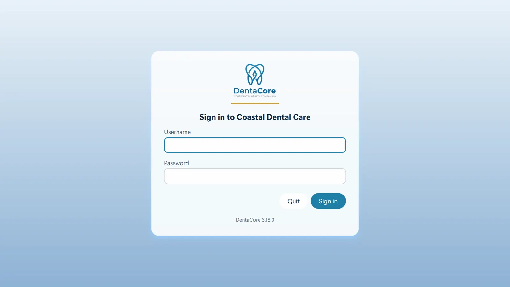
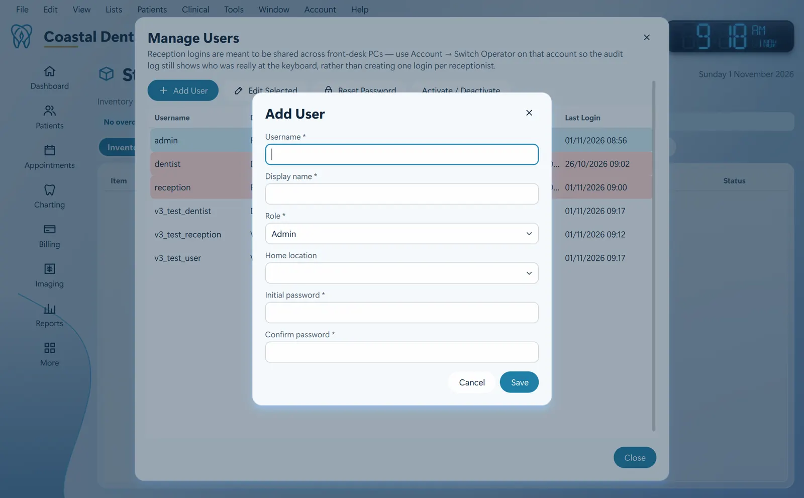
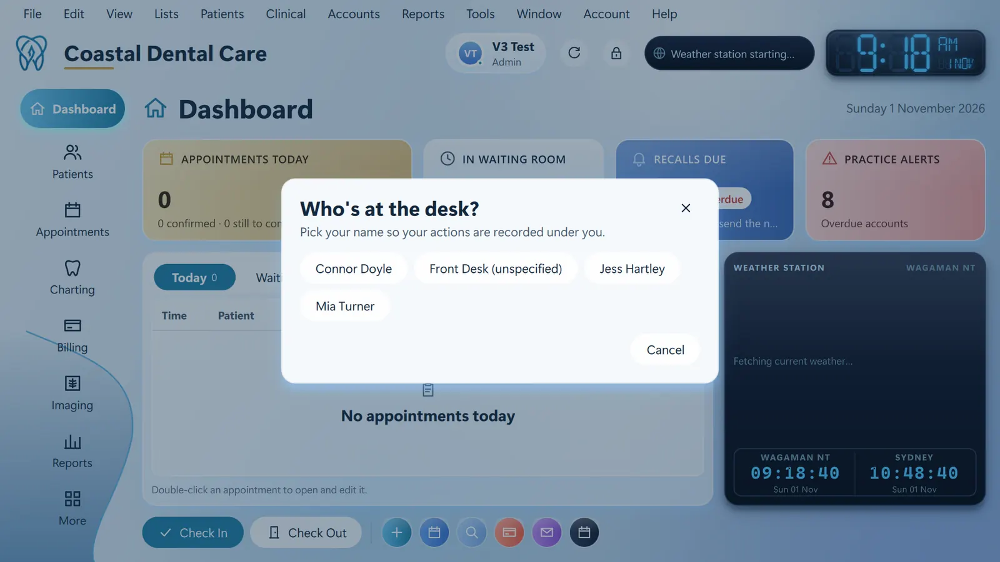
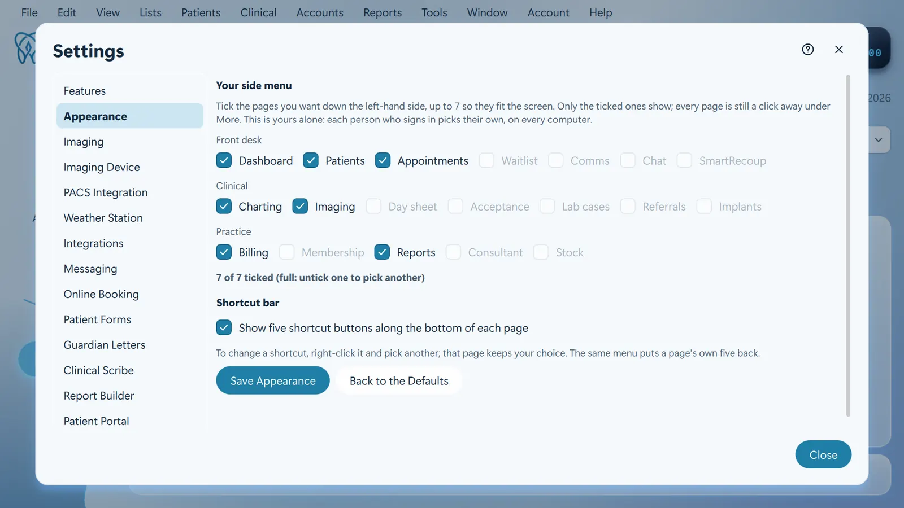
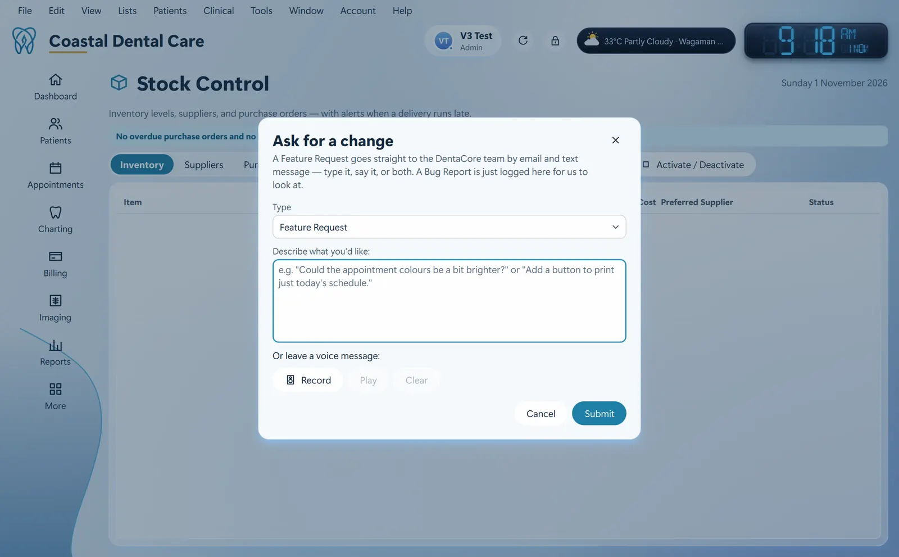

01 / 07 · Roles & navigation
Sign in with your own login
Sign-in screen
Every person signs in with their own username and password. A brand-new practice creates its first Admin login at the very first start, and that Admin adds everyone else. New logins must change their password the first time they're used.
- Four built-in roles: Admin, Dentist, Reception and Owner. What you can open depends on your role, not your job title.
- Menus and pages you don't have permission for are hidden, so nobody wanders into the wrong screen.
- Demo passwords are refused anywhere except a demo database, so a training login can never open a real practice.
- Ctrl+L locks the workstation on the way out of the room, and an idle workstation locks itself.

02 / 07 · Roles & navigation
Four roles that split the work sensibly
Account → Manage Users
Admin and Owner deliberately split the practice-manager job in two. Admin holds the keys to how the practice is set up. Owner trades those away for the practice's most sensitive numbers.
- Reception: booking, patients, billing and communications. No clinical records, stock or practice-wide reports.
- Dentist: clinical charting, imaging, billing and reports, plus their own Chairside view. Assistants and hygienists usually sign in with a Dentist-role account of their own.
- Admin: everything needed to run and configure the practice, including users, the fee catalog, rooms, backups and the audit log, plus clinical access.
- Owner: the business screens plus owner-only reports about each dentist's efficiency, hours and the practice's real profit.

03 / 07 · Roles & navigation
Shared front-desk logins that still know who's at the desk
Account → Switch Operator
Reception is often one shared login. Straight after signing in, DentaCore asks who is at the desk, so the audit trail always names the real person, not just “Reception”.
- Pick your name from a short list after signing in.
- Switch Operator at any time when the shift changes.
- The Practice Manager keeps the list of names under Account → Manage Operators, including staff who don't need a full login.

04 / 07 · Roles & navigation
One layout on every screen
Every page
Every page shares the same frame, so once you've learned one you've learned them all.
- Side menu down the left with up to seven pages, and every other page under More (Ctrl+M).
- Menu bar with every action and keyboard shortcuts for the common ones: Ctrl+N New Patient, Ctrl+Shift+N New Appointment, Ctrl+F Find Patient, Ctrl+P Print, F1 Help.
- Header with the practice name, who's signed in, Refresh, Lock and, for a dentist, the Chairside switch.
- Weather Station in the corner: the practice's weather and two clocks, handy when you deal with patients or labs in another time zone. Click it for sunrise, sunset, pressure and the moon.
- Print from any screen makes a clean PDF of what's on it.

05 / 07 · Roles & navigation
Your own side menu and shortcut bar
Settings → Appearance
Each person sets DentaCore up the way they work, and their choices follow them to every computer in the practice.
- Tick the seven pages you want on your side menu. Every other page stays one click away under More.
- Five shortcut buttons sit along the bottom of every page, starting with that page's most-used jobs (on Billing: New Invoice, Overdue Invoices, Receipts, Day Sheet, Find Patient).
- Right-click a shortcut, or press and hold it, to swap it for something else.
- This Page's Own Five puts the defaults back, and Hide the Bar removes it.

06 / 07 · Roles & navigation
Help on the screen you're looking at
Help menu · F1
DentaCore explains itself. Press F1 and the help opens at the topic for the window in front of you.
- Help Center with every topic and a search box.
- Help on This Screen (F1), and a ? on most windows, open the right topic straight away.
- Guided Tour walks round the window, then opens each page your role can use and points at the part it's describing.
- Hover over almost anything for a short tip.
- The DentaCore Guide: a separate illustrated app with 84 topics and 171 screenshots, by role, that prints to PDF for training new staff.

07 / 07 · Roles & navigation
Ask for a change from inside the app
Help → Feature Request / Feedback
If something should work differently, staff can say so straight away, typed or as a short voice message.
- Record, play back and re-record a voice message before sending.
- A Feature Request reaches the people who build DentaCore immediately by email and text.
- A Bug Report is saved and reviewed.
- Software updates install from inside DentaCore when they're ready.
